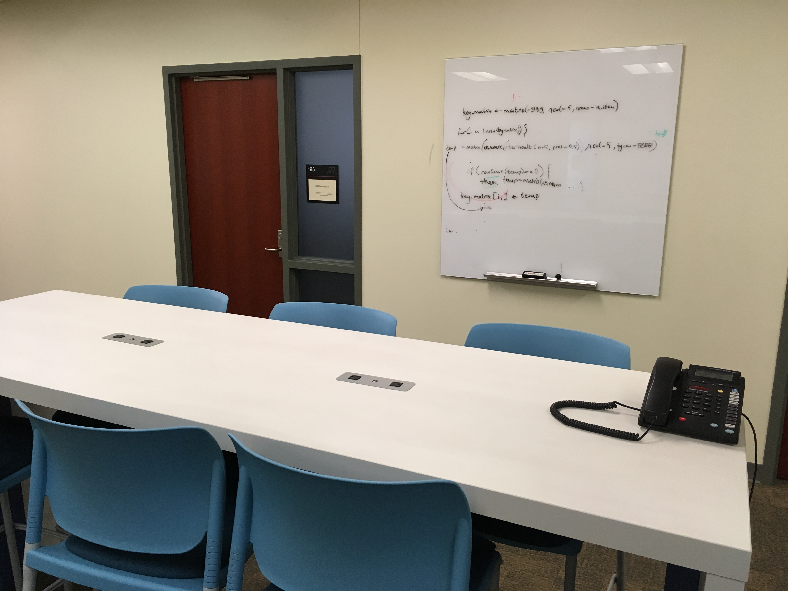
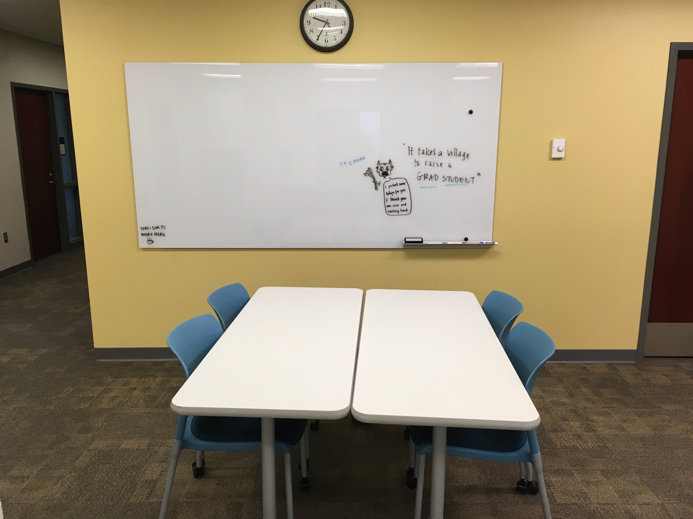

./assets/body-header.qmd
In the fall of 2008 (maybe 2007; my memory is fleeting) our department moved from Burton Hall to the, at the time, newly renovated Education Sciences Building. This building is beautiful from the outside; brick, overlooking the Mississippi River. The building was designed in such a way that (at least on my floor) there are two long parallel hallways with the faculty offices on the outside of these hallways (running the exterior wall of the building) and the interior filled with lab space (small offices) for research grants. Other than the claustrophobic closed-in linear feeling of this, the setup isn’t that terrible.
The space designed for students, however left a lot to be desired. The student space was clustered into two different open areas on the floor and was filled with study carrels, the thought being that each student who wasn’t placed in a research lab needed a designated carrel. The reality was that students didn’t use these at all and quit showing up to the building.
One of the faculty’s biggest laments is that students are never around. Perhaps it is the experiences we had as graduate students, but many of us believe that having community with other students and faculty alike is a large part of growing as a scholar. Of course the internet and online accessibility to resources has changed many aspects of human life, including graduate school. But, the choice to be around the building more often, let alone to work cooperatively (another of the faculty’s goals) is often less palettable when students are accustomed to the large tables and open areas associated with coffee shops and other study areas around campus.
I couldn’t blame the students for not showing up. Around 2009 I started inquiring (along with some others) about whether we could change things. This was the “way it was” we were told and we couldn’t change things. As the years went on, I kept asking, even offering to dismantle all of the carrels myself, haul them to the university storage facility and bring in chairs, couches and tables. The answer was consistently “no”.
Last year, after organizing some students and other faculty we finally got a “maybe”, which turned into “yes”. This spring the carrels came down and were replaced with large tables. We also put in several whiteboards. Although we didn’t get our couch, this is an improvement. The pictures below show the new space.



Since this space was renovated we have been seeing many more students working in the building. One of my colleagues sent out the following email:
Hi everyone,
I have been working late pretty consistently over the past 2 weeks and have good news to report: the new student space on the 1st floor is a huge hit!
Every evening, I have seen clusters of students at the tables working on class projects, reading papers, talking about research, and eating and drinking and socializing together. I could not be happier.
(It strongly reminds me of the camaraderie of my graduate school days, before the rise of cell phones and laptops and wireless networks emptied university labs and filled coffeeshops with people working alone.)
Last night, for example, I drifted down around 6 PM and saw Carlos, Rina, and Ashley working on R programming (perhaps for 8251), Tayler at a separate table coding data, and Jesslyn eagerly preparing to analyze the post-test data from her first-year project. I checked in 2 hours later, as I was leaving. Jesslyn and Ashley had been replaced by Ozge and Tai. Who knows how late they all worked.
I write this post to remind others (and myself) that change at a university takes time. A lot of time. It also takes a person to take the lead and keep asking. This took us almost 10 years to get changed. It was 8–9 years of asking and hearing “no” before we got a maybe. Many initiatives take a lot of time and one dedicated person who gets others excited as well. Keep asking; keep working; today’s “no” is tomorrow’s “yes”. Now if only we could get a couch and a cappuccino maker!